Extracting Pages Tutorial
In this example, we demonstrate how to extract pages from
a document attached to a process instance and pass those
pages to a new process that will be started.
For details on the extracting pages functionality, refer to chapter
Extracting Pages
in the
End User Handbook.
Importing the Example Model
We will use the provided ScanDemo example model containing several
process definitions that allow process attachments.
Download the following ZIP file containing the example model in
folder managing-unstructured-workflow::
all-tutorials.zip
Create a dynamic Web project designed to deploy Stardust models to run in
the Stardust Portal.
For detailed information on creating dynamic Web projects for usage with
the Stardust Portal, please refer to the
Rapid Application Development guide.
Right-click the project and select
Import > Process Manager Wizards > Process Model.
Click Next and browse to the location of the example
model extracted from the zip file.
Deploying and Running the Model
Perform the following steps to deploy the model and run
the project in the Stardust Portal:
- Start your server and deploy the model. For details on how to
deploy a model, please refer to the chapter Deploying a Workflow Model of the Support Case Example.
- Start the Stardust Portal as described in the chapter
Logging in the Stardust Portal of the End User
Handbook. Login as administrator (motu/motu). You can use the
Shift-F8 short key.
- Switch to the Participant Manager View of the Administration Perspective.
- Create a user and assign him to the roles Scan Operator and
Good Order Reviewer. For details on how to create a new user, refer to section
Creating a new User of the chapter
Creating and Editing User Accounts of the
Stardust Portal documentation.
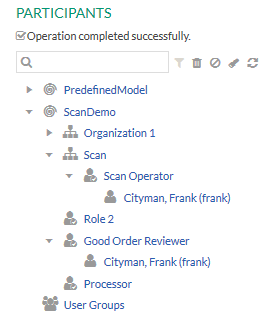
- Logout and login again as the new user.
- In the Workflow Perspective, start the process IRA.
Attaching a TIFF Document
Now attach a multi-page TIFF Document to activity Good Order Review:
- In the toolbar click the Process Documents icon and
choose Upload Document.
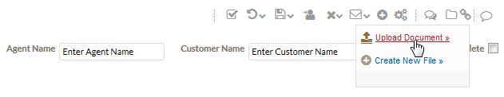
- In the Upload File dialog, browse to the location of the
multi-page TIFF document and click Upload.
- Now open the Process Details view for the
IRA process instance, e.g. from the Process Manager or Process Search
view.
- Expand the Process Documents section.
- The uploaded TIFF document is displayed under Process Attachments.
- Click the TIFF document to open the TIFF document viewer. For details on this
view, refer to chapter
Viewing TIFF Documents of the
End User
Handbook.
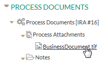
Note that you can also attach multi-page TIFF documents by scanning TIFF documents.
The document opens in the TIFF document viewer.
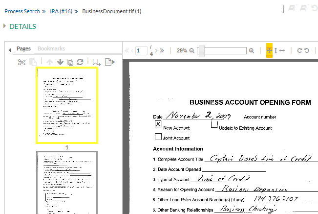
Figure: Document opened in the TIFF Viewer
Now extract pages from the document and pass those
pages to a new process that will be determined in the Extract Pages dialog:
- In the Bookmarks section, click the
Add Bookmark icon .
- Add a bookmark with a valid page range, e.g. 2-3 and click the tick icon:
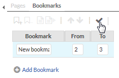
- Save the document with the bookmark by clicking
the Save icon
 in the upper right corner.
in the upper right corner.
- In the Save Document Confirmation dialog,
confirm that bookmarks and annotations should be saved.
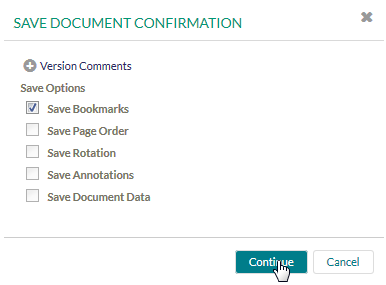
- Select the bookmark and click the Extract Pages
icon.
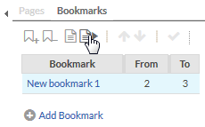
- The Extract Pages Dialog opens with the selected bookmark as
preset column and default entries.
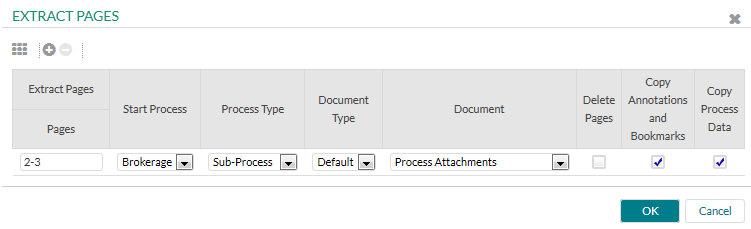
- Click the Start Process drop-down list. It contains processes
the logged in user is able to start.
- Choose the Brokerage process.
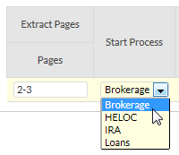
- Keep Default as selected Document Type.
- Leave Process Attachments as document data.
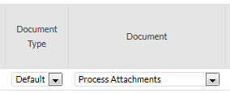
- Select to delete pages, copy annotations and bookmarks as well as
to copy the process data.
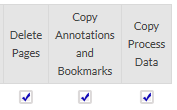
- Click OK to start the Brokerage process.
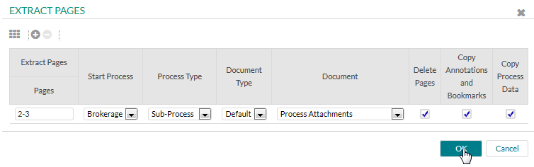
- A dialog opens to notify about the newly started processes.
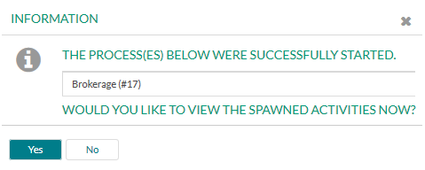
- Click Yes to view the spawned activities.
Checking the Newly Created Document
In the worklist view of the spawned activity, see the started
activity Good Order Activity of the newly
started process Brokerage.
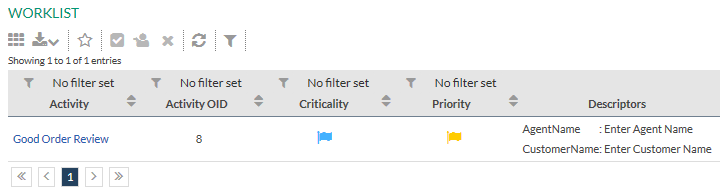
Now view the newly document, created as process attachment:
- Open the Process Details view for the started activity.
- Find the data attached to the process under Process Attachments in
the Process Documents section.
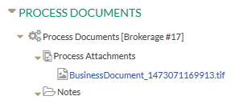
- Click the TIFF document to open it in the TIFF document viewer.
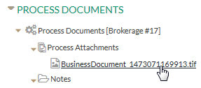
See that the new document is created containing the extracted pages. In our example,
pages 2-3 from the original file are present and reordered as 1-2.
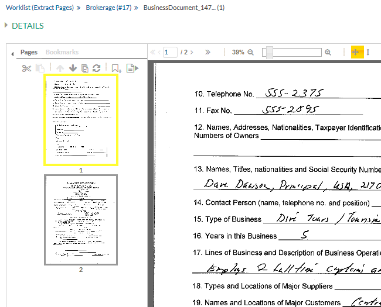
Figure: New TIFF Document
Reviewing the Source Document
Reopen the source TIFF document to check it the extracted
pages are correctly deleted.
In our example, the pages 2-3 are deleted and the remaining pages
are reordered.
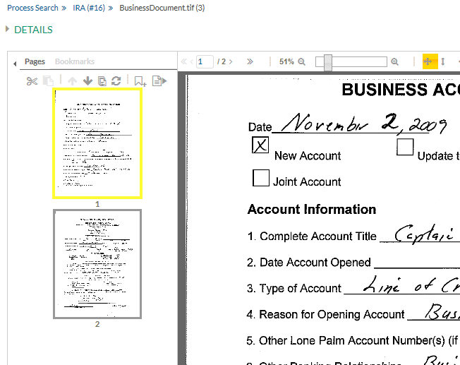
Figure: Updated Source Document
Reviewing Process History of Affected Process Instances
Open the Process Details view of the originally started IRA
process instance. The spawned Brokerage process instance
should be displayed as sub-process of this process instance in the
Process History section.
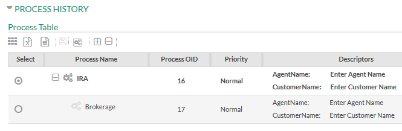
Figure: Newly started process displayed as sub-process
of origin process instance.